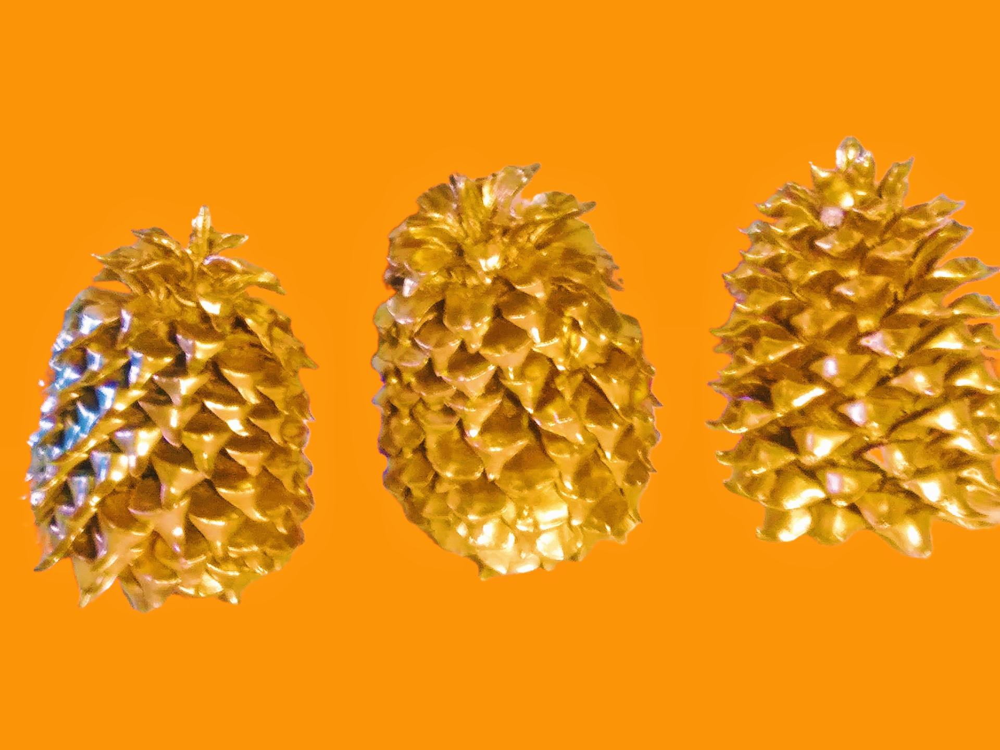
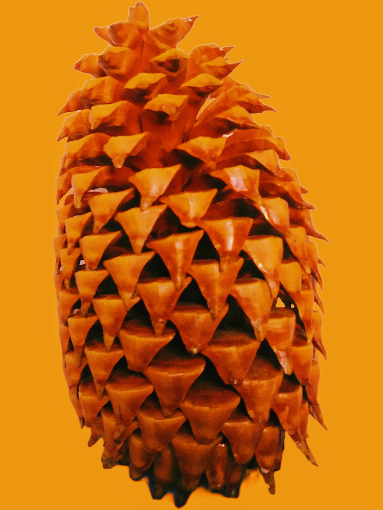

Our Specialty Pine Cones
All of our Coulter, Sequoia, Sugar, Pinyon, Jeffreyi, and Ponderosa pinecones are responsibly sourced from the California National Forest. Each cone is unique, and is chosen for size and beauty. As with any artisan or natural product variations occur and no two items will be exactly alike. These cones fall to the ground from great heights. To avoid damage, it is best to never take cones directly from the tree itself. Small perceived imperfections are just mother nature's signature. We also carry other common cone varieties.
Our classic cone decor comes in a variety of sizes and colors. You can enjoy vibrant golds, sparkeling silvers, shiney bronzes, and many natural tones. Custom color combinations and designs are also availible. There is something for every size space, style and color theme. Wether you perfer farmhouse, bling, or something in between, pine cones lend a remarkable aesthetic to every home. Our pinecones have a classic natural beauty sure to make your space stand out.
How Our Pine Cones are Prepared
At Creative Cone & Craft, we care about the quality of our products. Each cone is soaked and cleaned to remove insects and excess sap. After cleaning, cones are allowed to partially air dry. Cones are then baked, depending on size, for 4 - 16 hours at low temperture. This allows the cones to take on a natural gloss or matte finish according to how much plant fluid is left inside the cones while baking. The cones are removed from the oven and cooled. The pine cones are now prepared to be painted, decorated, or packaged.
- about pine cones
- oldest pine tree
- "Caution!" Most pine cones have prickles that can be sharp!
- Some pine cones have seeds that can fall out overtime. Supervision must be taken around children.
- Not for small children!!!